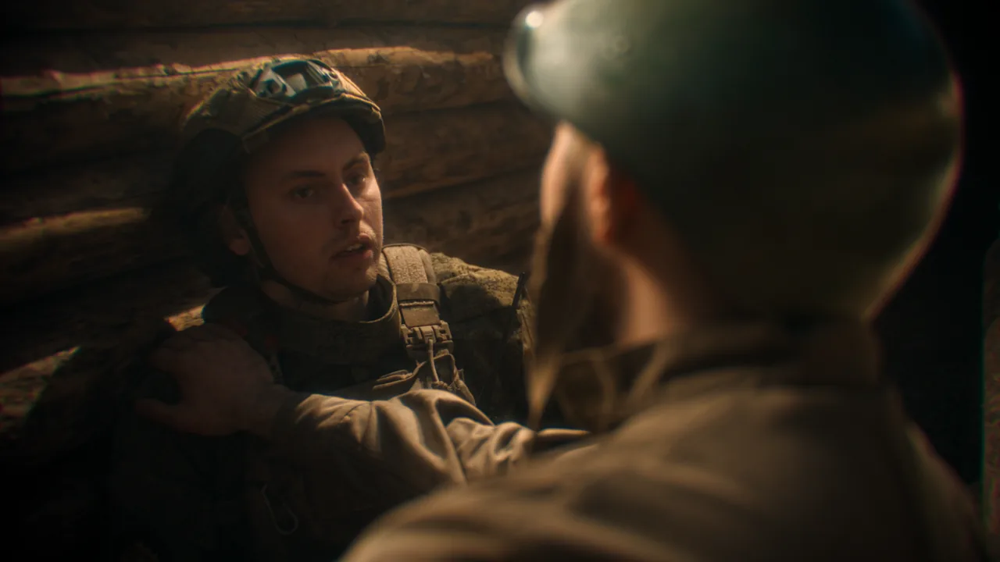

Порядок цветокоррекции в DaVinci ResolveЧетыре шага, строго по порядку
Интерактивный урок: вместо стены текста — панель «как в DaVinci», ползунки, которые можно крутить, и кадры до/после. Порядок шагов — тот же, каким я крашу коммерческие ролики каждую неделю.
 LOG · ИСХОДНИК
LOG · ИСХОДНИК
Цветокоррекция разваливается не от нехватки таланта, а от неправильного порядка. Каждый следующий шаг стоит на предыдущем: если начать с «красоты», всё, что под ней, останется кривым. Порядок такой: баланс белого → экспозиция → насыщенность → look. В Resolve каждый шаг живёт в отдельной ноде — почему это важно, увидите в шаге 4.
Баланс белого
Что. Убрать паразитный оттенок, чтобы белое в кадре стало белым, а серое — серым.
Как. Найдите в кадре предмет, который в жизни был белым или серым, и уберите оттенок пипеткой или ползунками Temp (тепло-холод) и Tint (зелень-пурпур). В Resolve перекос виден на скоупе Parade: на белом объекте каналы R, G и B обязаны сойтись.

Пока белое не белое, все следующие решения — контраст, насыщенность, look — принимаются на кривом фундаменте и поплывут, как только перекос уберут.
Экспозиция и контраст
Что. Расставить яркости: тени вниз до глубоких, света вверх до ярких — и ничего не обрезать.
Как. Три колеса: Lift двигает тени, Gamma — середину, Gain — света. Судить не на глаз, а по скоупу Waveform: глаз адаптируется и врёт, осциллограмма — нет. «Полка», прижатая к низу или верху шкалы, — это обрез: информация в этих местах потеряна безвозвратно.
А теперь сами — покрутите контраст на готовом кадре и посмотрите, как уходит и возвращается «воздух»:
Через десять минут работы глаз привыкает к любой картинке и перестаёт видеть перекос. Waveform не привыкает: обрез и недотянутый контраст на нём видны всегда.
Насыщенность
Что. Оживить цвет — и не пережарить.
Как. Поднимайте Saturation до момента «стало живым» — и отступите примерно на треть назад. Перенасыщенность — самый частый маркер любительского грейда. Попробуйте сами найти эту грань:

- Кожа обязана остаться кожей. Небо можно сделать любым, но лица в оранжевом или зелёном зритель чувствует как фальшь — даже не понимая причину.
- На вектороскопе у кожи есть свой ориентир — линия скин-тона: здоровая кожа любого оттенка ложится вдоль неё.
Вид: look
Что. Только теперь — творчество: тёплые света, холодные тени, плёночность, что угодно.
Как. Look кладётся отдельным слоем поверх честной базы, а не вместо неё. В Resolve это отдельная нода в цепочке — и в этом весь смысл нодовой логики:
Отдельное предупреждение про «красивые LUT из интернета»: творческий LUT рассчитан на нормальный контраст на входе. Наложенный на сырой log, он даёт ту самую «кислоту». Сначала техническая конверсия — CST или официальный LUT камеры, — потом творчество.
Весь путь — до и после
- 1. Баланс белого — белое стало белым, каналы на Parade сошлись
- 2. Экспозиция — тени глубокие, света яркие, на Waveform ничего не обрезано
- 3. Насыщенность — до «живого» и на треть назад, кожа осталась кожей
- 4. Look — отдельной нодой поверх честной базы
Где практиковаться: бесплатный DaVinci Resolve — не демка, а тот же инструмент, которым красят кино и рекламу; для обучения его хватит целиком. Как установить и с чего начать — в гайде «Цветокоррекция видео: как сделать самому». Сколько стоит, если делать чужими руками, — в разборе «Сколько стоит цветокоррекция».